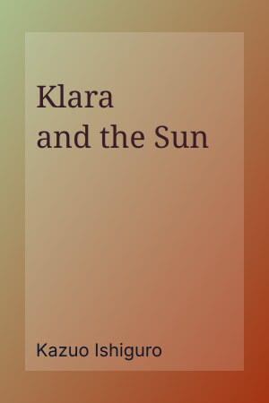

Sci-Fi
This page is for friends, classmates, and book-club members who want quick guidance for selecting books they will actually finish. Instead of chasing trends, I use a simple process that balances curiosity, reading level, and time available.
Step 1: Choose one theme for the month. A clear theme helps avoid decision fatigue and builds momentum.
Step 2: Mix one easy read with one stretch read. This keeps reading enjoyable while still helping you grow.
Step 3: Keep one discussion-friendly title. Shared books create better conversations and stronger retention.

This title works well when you want thoughtful science fiction with emotional depth and strong discussion potential. It pairs nicely with a shorter nonfiction title so your reading list stays balanced.
Return to the main YearReads page to filter by genre, track progress, and save notes in the modal details view.